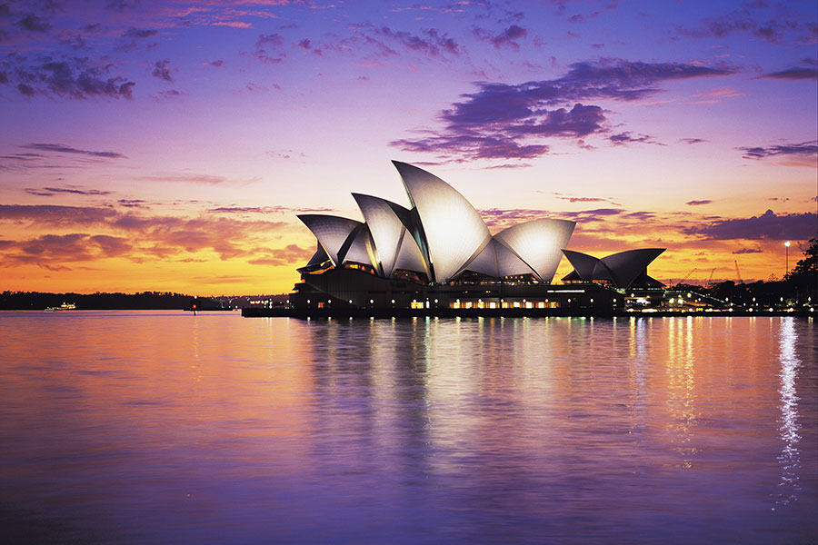
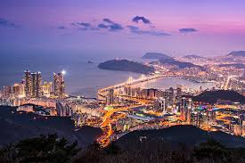
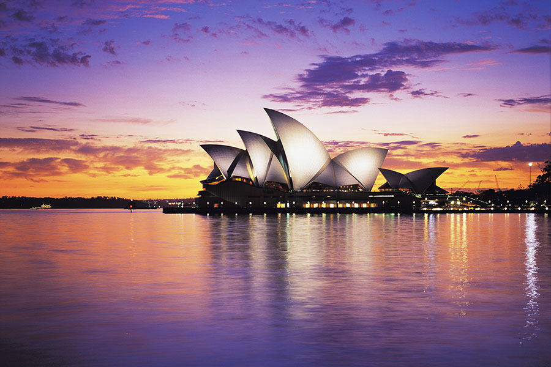
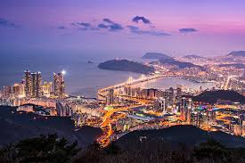

Travel Goals
One of my biggest goals is to travel the world and experience different cultures because I have never been out of the US and India. I’ve always been fascinated by history, architecture, and natural landscapes, which is why my top three dream destinations are Egypt, Australia, and Japan.
I want to visit Egypt to see the Great Pyramids mainly and Australia is on my list for Sydney mainly and finally, Japan fascinates me with its mix of futuristic technology and deep-rooted traditions — I’d love to experience cherry blossom season in person. And finally if I do have the chance I would love to visit Korea, specifically Busan because I have friends that live there.
 



Career Goals
Professionally, my main goal is to become an AI/ML-focused Data Scientist or Data Engineer. I’m passionate about using data to build smarter systems that can automate processes, optimize decision-making, and uncover meaningful insights especially in a time where artificial intelligence is very prominent.
In addition to pursuing a data-driven career, I’m also working on learning more about investing in stocks and financial data analytics. Understanding how markets behave through data visualization and machine learning models is something that deeply interests me. Over time, I hope to use my technical skills to explore innovative intersections between AI, finance, and geography — and find ways to involve myself in these areas. Though it is hopeful I hope I can achieve these goals by working hard and learning everyday.